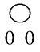
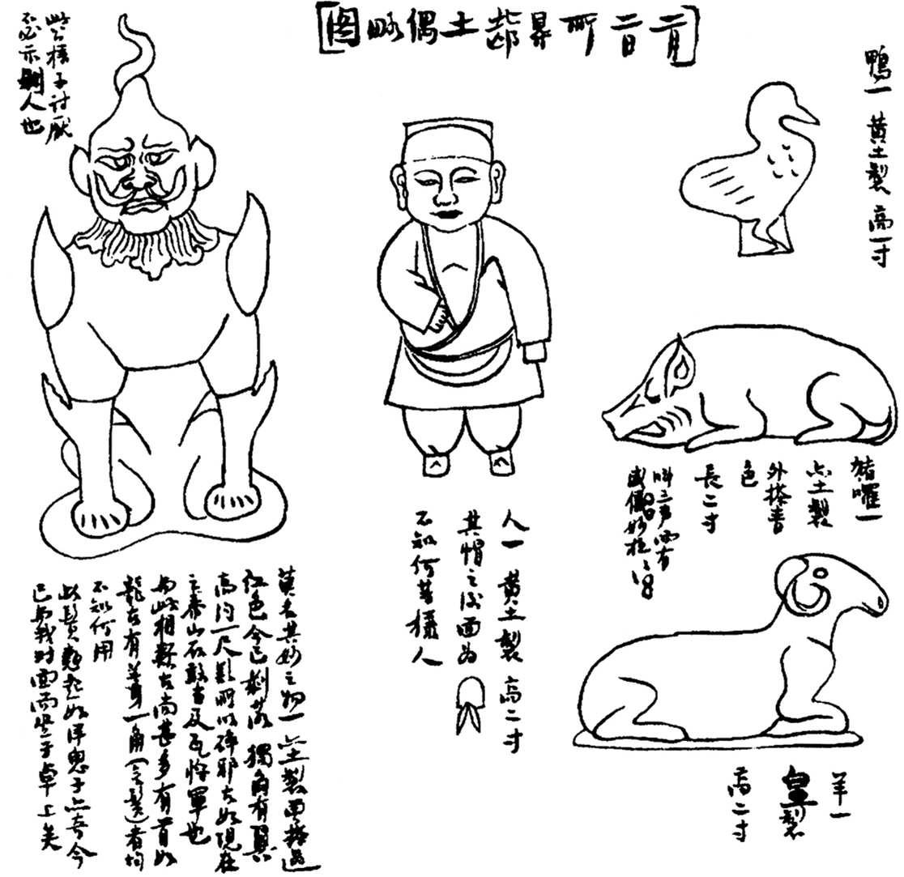
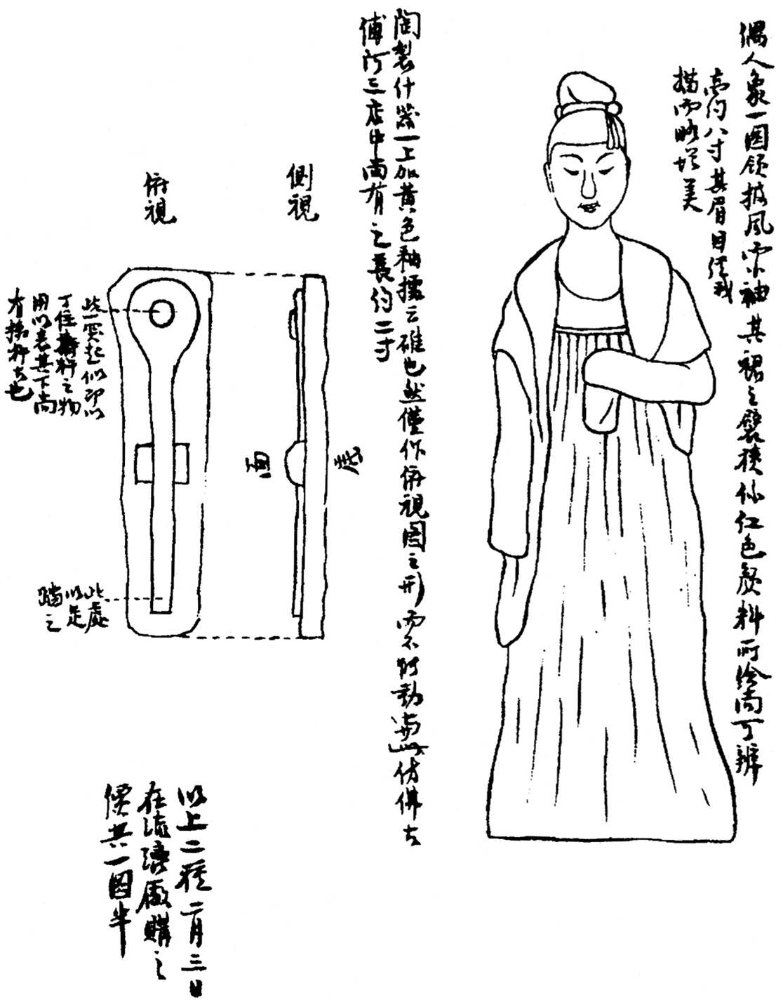

一
二月二日所得北邙[122]土偶略图
鸭一，黄土制，高一寸。
猪啰一，亦土制，外搽青色，长二寸。叫三声而有威仪，妙极，妙极。
羊一，白土制，高二寸。
人一，黄土制，高二寸，其帽之后面为

，不知何等样人。莫名其妙之物一，亦土制，曾搽过红色，今已剥落。独角有翼，高约一尺，疑所以辟邪者，如现在之泰山石敢当及瓦将军[123]也。与此相类者尚甚多，有首如龙者，有羊身一角（无须）者，均不知何用。
此须翘起如洋鬼子，亦奇。今已与我对面而坐于桌上矣。
此公样子讨厌，不必示别人也。
二
偶人象一，圆领披风而小袖，其裙之襞积系红色颜料所绘，尚可辨，高约八寸，其眉目经我描而略增美。
陶制什器一，上加黄色釉，据云碓[124]也。然仅作俯视图之形，而不能动。与此仿佛者，傅阿三店中尚有之，长约二寸。此一突起，似即以丁住捣杵之物，用以表其下尚有捣杵者也。
此处以足踏之。
以上二种，二月三日在琉璃厂[125]购之，价共一圆半。


注 释
[121] 本篇据手迹编入。约写于1913年2月初。原无标题、标点。
鲁迅1913年2月2日日记载：“午后许季上来，同往留黎厂阅书，……又购北邙所出明器五具，银六元，凡人一、豕一、羊一、鹜一，又独角人面兽身物一，有翼，不知何名。”又2月3日载：“下午同季巿、季上往留黎厂，又购明器二事：女子立象一，碓一，共一元半。”鲁迅购得这些明器后，按实物绘图两幅并作此说明。按明器，即随葬物品。鹜，即说明文字中的“鸭”。
[122] 北邙 山名，又称邙山、芒山，在河南洛阳市北。东汉及魏的王侯大臣多葬于此。
[123] 泰山石敢当 西汉史游《急就篇》中已有“石敢当”一语，据唐代颜师古注：“敢当，言所当无敌也。”旧时人家正门或村口，如正对桥梁、通道，常树立一个石人或石片，上刻“泰山石敢当”字样，以作“镇邪”之用。前加“泰山”，盖因旧时流传泰山府君能“制鬼驱邪”故。瓦将军，旧时房屋的檐瓦、脊瓦上刻塑的各种神像，用来“辟邪”。
[124] 碓 舂谷的器具。在石臼上架木杠，杠对石臼一端装杵或缚石，用脚踏动杠的另一端，使杵或石起落，以脱去谷皮或将米舂成粉。
[125] 琉璃厂 日记亦作留黎厂，北京街市名。自清代乾隆以来，这一带遍布书籍、古玩、字画、碑拓、文具等店铺。